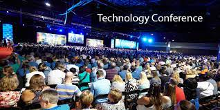
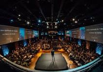

History of TechCon
TechCon began in 2022 with a small group of tech enthusiasts who wanted to share their knowledge and passion for technology. Over the years, it has grown into one of the largest and most influential tech conferences in the world.
From its humble beginnings, TechCon has expanded to include a wide range of topics and speakers, attracting attendees from all over the globe. Here is a glimpse of our journey:


Our Mission
Our mission is to bring together the brightest minds in technology to share their insights, inspire innovation, and foster a community of collaboration and learning. We aim to create an environment where professionals can grow their skills, network with peers, and stay ahead of the latest trends.
Notable Past Speakers
Over the years, TechCon has hosted some of the most influential figures in the tech industry. Here are a few notable past speakers:

Jane Doe
Jane Doe, CTO of TechCorp, has been a pioneer in artificial intelligence and machine learning. She has contributed significantly to the development of AI technologies that are transforming industries worldwide.

John Smith
John Smith, the founder of InnovateX, is known for his groundbreaking work in blockchain technology. His contributions have paved the way for secure and transparent digital transactions.

Emily Johnson
Emily Johnson, CEO of FutureTech, has been at the forefront of advancements in renewable energy technologies. Her leadership has driven the adoption of sustainable energy solutions globally.